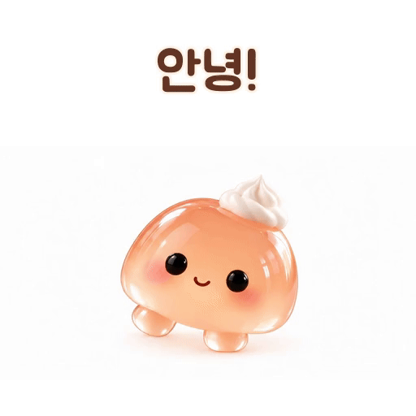
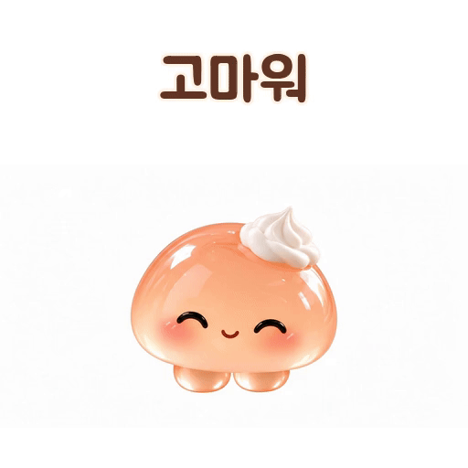
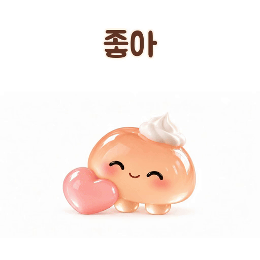
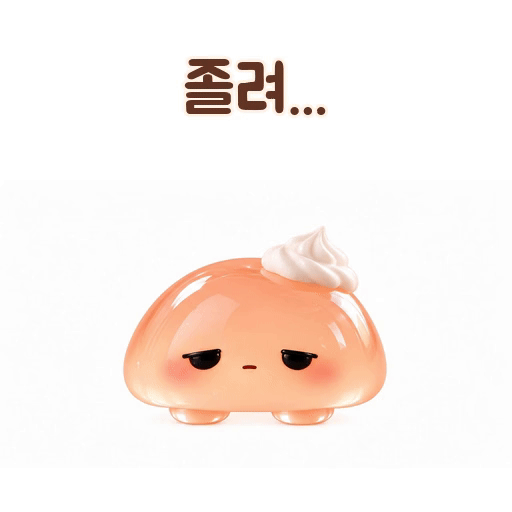
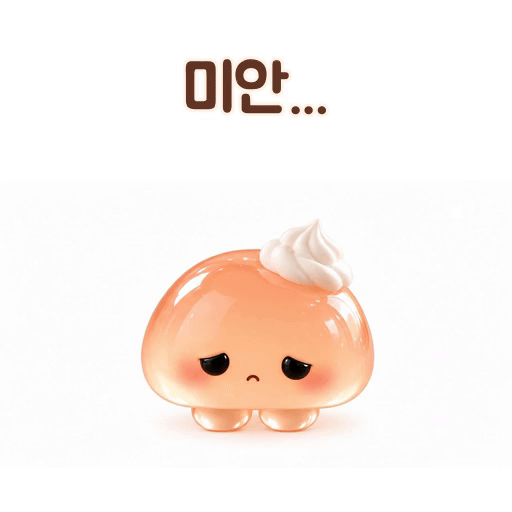
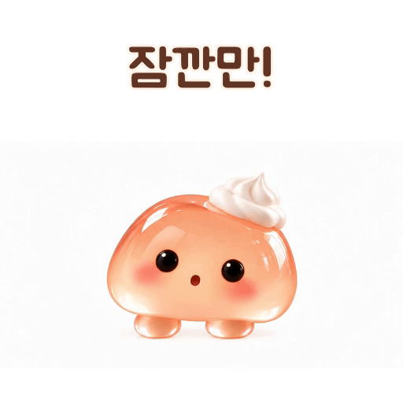

쪼리 움직이는 짤 6종
마음에 드는 짤의 저장 버튼을 눌러 가져가세요.

안녕! 저장

고마워 저장

좋아 저장

졸려... 저장

미안... 저장

잠깐만! 저장
저장이 안 되나요?
짤을 꾹 눌러 “이미지 저장”을 고르거나, 오른쪽 위 메뉴에서 “브라우저에서 열기”를 누른 뒤 다시 저장해 보세요.
마음에 드는 짤의 저장 버튼을 눌러 가져가세요.

안녕! 저장
고마워 저장
좋아 저장
졸려... 저장
미안... 저장
잠깐만! 저장저장이 안 되나요?
짤을 꾹 눌러 “이미지 저장”을 고르거나, 오른쪽 위 메뉴에서 “브라우저에서 열기”를 누른 뒤 다시 저장해 보세요.